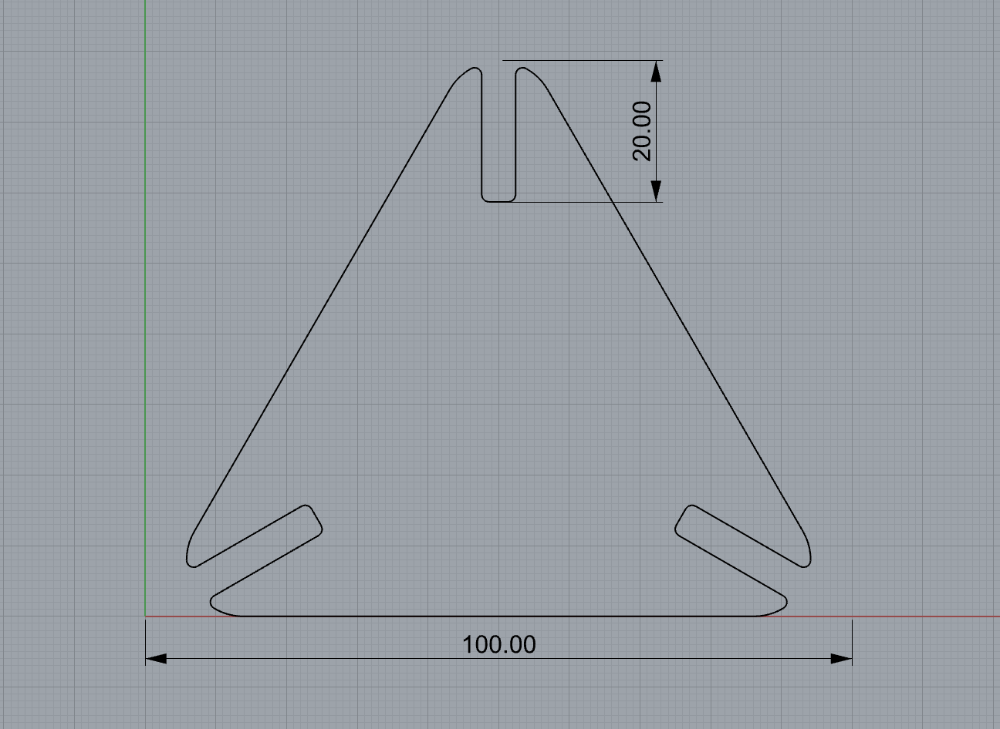
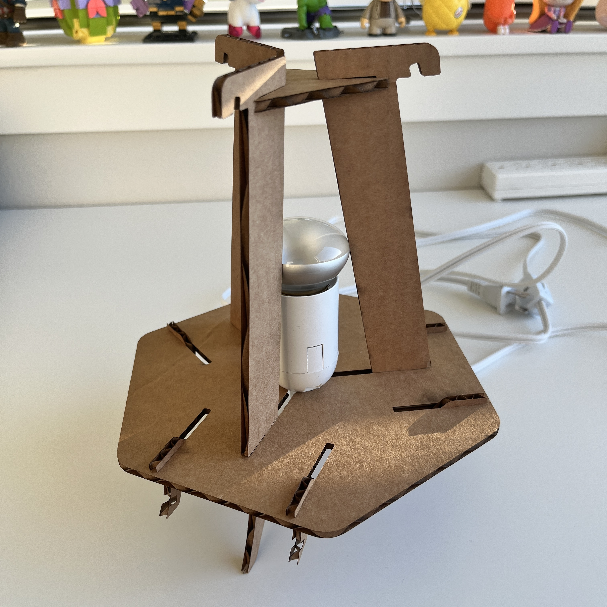

Assignment 5!: Lamps Part 2 and Molding and Casting Part 1
By Sherry Wang
As always, here are some images of what my lamp look like:
Previously in A5, I talked about trying to laser-cut a lamp that has lattice-hinged sides and a triangular shape. I used this image as a reference:

I finished the three sides by completing the lattice hinge on my own and this was what it looked like:
I also created the top of the lamp, which was a triangle:

Beginning this week, I started by designing the bottom of the lamp, which was a hexagon. I measured the diameters of the innered and the lightbulb and the width of the plug. Since my plan was to have a circle in the middle of the bottom, let the cord go through, and block the innered from passing through this circle, its diameter should be between 25.1mm (the width of the plug) and 37.3mm (the diameter of the innered).
Besides the circle, the bottom also included gaps that fit the bones and connecting pieces of the lamp. Since I didn't want to use glue, I did quite some explorations on how to hold the sides together and used the reference image once again. In the end, the bottom of the lamp looks like this:
The next pieces were the connections that would hold up the sides. Looking at the reference image, I created a version (on the right) that was exactly the same. However, I was a little afraid that the part at the bottom would be too thin and easy to break, therefore I did some alternations and came up with the one on the left, which was also the one that I eventually used.
The bones of the lamp were the most difficult and I saved them for the last. Because the top and bottom were different size-wise, the bones connecting these two pieces and holding the sides at the same time should have an angle. I had no idea what the angle should be, so I decided to go to the Mill, cut all the other pieces out, and eyeball the angle based on the real situation.
My plan was to cut the pieces first using cardboards, and then move to woodboards, but that led to a difficulty: these boards have different thickness (3.3mm for cardboards and 4.8mm for woodboards) and therefore I needed to scale my gaps accordingly. I did some calcuations, resized all the designs, and started cutting. Similar to before, I used 25 speed, 50 power, and 10 frequency.
After cutting, I tried assembling all the existing pieces together to figure out the dimensions of the bones. I realized that for the height, it would be better if it's shorter. Since making the bones too high would create wide gaps between the sides and even a possibility of them not connecting to both the top and the bottom. Keeping that in mind, I started designing the bones in Rhino. I first drew the one on the left and laser cut it out. Realizing that it was too short and blocking the sides from connecting with the connecting pieces, I made a second version (on the right).
And finally, I had all the pieces and was ready to assemble!!

I'm really satisfied with the turnout! It looks like this when being turned on:
I'm also able to remove the lamp from the innered, not using any glue, fasteners, adhesive, etc. The innered sits on the bottom that I created, and the lightbulb is stuck between the three bones perfectly.

Source files:
the sides of the lamp Rhino file
the sides of the lamp Illustrator file
the top of the lamp Rhino file
the top of the lamp Illustrator file
the bottom of the lamp Rhino file
the bottom of the lamp Illustrator file
the connecting pieces of the lamp Rhino file
the connecting pieces of the lamp Illustrator file
the bones of the lamp Rhino file
the boness of the lamp Illustrator file
Acknowledgements:
WeBentWood for the original design!
The Discord gang as always!